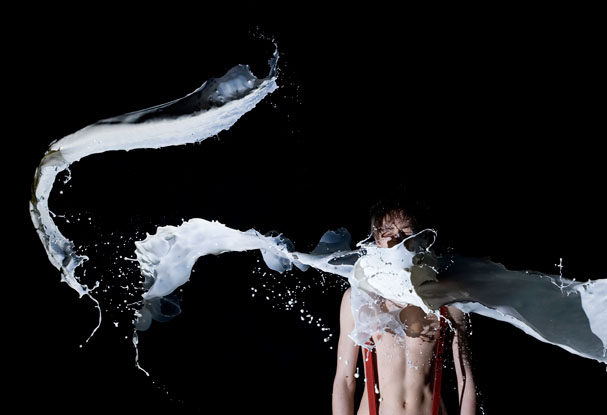
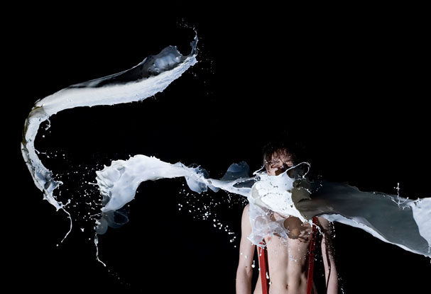

Bad Times
Times New Rope
Sequences 2008
Identity
Sequences is a real-time art festival in Reykjavík, hosted annually by the Living Art Museum. They approaced Jónas, Siggi Odds and myself for art-direction. We teamed up, with Mundi helping for some parts, and produced printed material and a website for this ever-growing festival.
The final product consists of an idea of milk captured in time, hinting at the festival's real-time focus.
The posters were printed in two colous offset, black and a bright PMS 605 by an environmental friendly printer.


 
